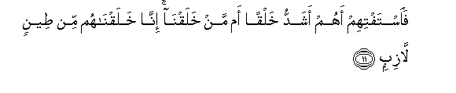

Sacred Texts Islam Index
Hypertext Qur'an Unicode Palmer Pickthall Yusuf Ali English Rodwell
Sūra XXXVII.: Ṣāffāt, or Those Ranged in Ranks. Index
Previous Next

The Holy Quran, tr. by Yusuf Ali, [1934], at sacred-texts.com
Sūra XXXVII.: Ṣāffāt, or Those Ranged in Ranks.
Section 1
1. By those who range
Themselves in ranks,
2. And so are strong
In repelling (evil),
3. And thus proclaim
The Message (of God)!
4. Verily, verily, your God
Is One!—
5. Rabbu alssamawati waal-ardi wama baynahuma warabbu almashariqi
5. Lord of the heavens
And of the earth,
And all between them,
And Lord of every point
At the rising of the sun!
6. Inna zayyanna alssamaa alddunya bizeenatin alkawakibi
6. We have indeed decked
The lower heaven with beauty
(In) the stars,—
7. Wahifthan min kulli shaytanin maridin
7. (For beauty) and for guard
Against all obstinate
Rebellious evil spirits,
8. La yassammaAAoona ila almala-i al-aAAla wayuqthafoona min kulli janibin
8. (So) they should not strain
Their ears in the direction
Of the Exalted Assembly
But be cast away
From every side,
9. Duhooran walahum AAathabun wasibun
9. Repulsed, for they are
Under a perpetual penalty,
10. Illa man khatifa alkhatfata faatbaAAahu shihabun thaqibun
10. Except such as snatch away
Something by stealth, and they
Are pursued by a flaming
Fire, of piercing brightness.

11. Faistaftihim ahum ashaddu khalqan am man khalaqna inna khalaqnahum min teenin lazibin
11. Just ask their opinion:
Are they the more difficult
To create, or the (other) beings
We have created?
Them have We created
Out of a sticky clay!
12. Bal AAajibta wayaskharoona
12. Truly dost thou marvel,
While they ridicule,
13. Wa-itha thukkiroo la yathkuroona
13. And, when they are
Admonished, pay no heed,—
14. Wa-itha raaw ayatan yastaskhiroona
14. And, when they see
A Sign, turn it
To mockery,
15. Waqaloo in hatha illa sihrun mubeenun
15. And say, "This is nothing
But evident sorcery!
16. A-itha mitna wakunna turaban waAAithaman a-inna lamabAAoothoona
16. "What! when we die,
And become dust and bones,
Shall we (then) be
Raised up (again)?
17. "And also our fathers
Of old?"
18. Qul naAAam waantum dakhiroona
18. Say thou: "Yea, and ye shall
Then be humiliated
(On account of your evil).
19. Fa-innama hiya zajratun wahidatun fa-itha hum yanthuroona
19. Then it will be a single
(Compelling) cry;
And behold, they will
Begin to see!
20. Waqaloo ya waylana hatha yawmu alddeeni
20. They will say, "Ah!
Woe to us! this is
The Day of Judgment!"
21. Hatha yawmu alfasli allathee kuntum bihi tukaththiboona
21. (A voice will say,)
"This is the Day
Of Sorting Out, whose
Truth ye (once) denied!"